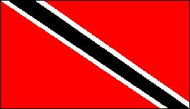

Trinidad y Tobago
|  |
Información general
Nombre oficial: República de Trinidad y Tobago.
Área: 5130 km².
Costas: 362 km.
División política: 6 Condados, 1 Estado, 2 Ciudades y 3 Distritos (boroughs)
- Condados:
Nariva/Mayaro
St. Andrew/St. David
St. George
St. Patrick, Victoria
- Estado:
- Ciudades:
San Fernando
- Distritos:
Chaguanas
Point Fortin
Unidad monetaria: Dólar de Trinidad y Tobago
1 Dólar de Trinidad y Tobago = 100 centavos.
Idiomas: Inglés (oficial); español, hindi, chino, portugués, francés, árabe y arauaco (no oficiales).
Fiesta nacional: 31 de agosto, Día de la Independencia.
Gentilicio: de Trinidad y Tobago.
Hora oficial: GMT -4 horas (normal/verano).
Miembro de: ONU, Commonwealth, CARICOM, OEA.
Curiosidades
Tobago es realmente la cima de un volcán submarino con playas coralíferas.
En estas islas nació el calipso, ritmo melódico y de fama mundial, y el denominado barril musical, instrumento fabricado de bidones vacíos de petróleo.
Perfil
Ecónomico
Perfil Demográfico
Población: 1.300.000 hab.
Densidad de población: 253,4 hab/km²
Perfil Cultural
Alfabetismo: 98 %.
Religión:
- Católicos: 36,7%
- Hinduistas: 26,2%
- Anglicanos: 14,6%
- Protestantes: 12,8%
- Musulmanes: 7,0%
- Otros: 2,7%.
Sistema de Gobierno
Constitución vigente: 1 de agosto de 1976.
Sistema ejecutivo: Presidente (Jefe de Estado, elegido por la Cámara de Representantes y el Senado).
Sistema legislativo: Cámara de Representantes (treinta y seis miembros elegidos por sufragio cada cinco años) y Senado (treinta y un miembros).
Sistema judicial: Corte Suprema, Corte Superior, Corte de Apelaciones, cortes distritales y otras cortes menores.
Gobierno subdivisional: Tobago tiene su propia Asamblea (quince miembros).
Aproximación histórica
Situada muy cerca de las costas venezolanas, Trinidad y Tobago es un archipiélago formado por las dos islas mayores que dan nombre al país y por otras cinco más pequeñas. Trinidad y Tobago es el segundo mayor país de habla inglesa del Caribe, después de Jamaica.
Las islas fueron descubiertas por Cristóbal Colón en 1498 y permanecieron prácticamente ignoradas hasta 1532.
En 1797 los ingleses conquistan Trinidad, que es cedida a la Corona británica en 1802. Tobago es disputada por los holandeses hasta que finalmente es cedida a los británicos en 1814. Finalmente en 1888, ambas islas se unen en una colonia británica.
En 1958 el territorio se convierte en miembro de las Indias Occidentales, disueltas tres años después. En 1962 Trinidad y Tobago se convierte en estado independiente asociado a la Comunidad (Commonwealth) Británica.
Trinidad y Tobago presenta grandes atractivos turísticos, con un clima tropical atemperado por las brisas marinas.
«-- ir al comienzo
«-- regresar